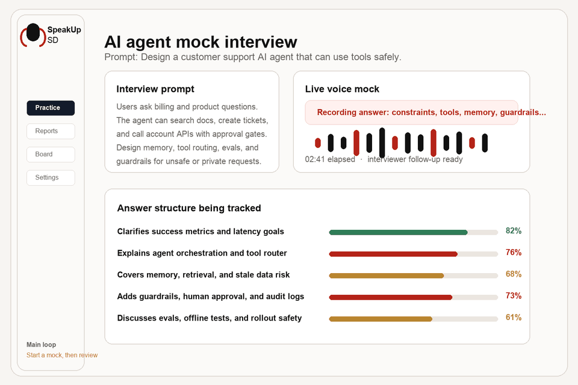

Pick the question
Choose a market-relevant traditional SD or AI agent prompt as the interview focus.
Free practice available now
Traditional SD + AI agent interviews
SpeakUp SD gives candidates a free workspace to rehearse market-relevant interview questions, from classic architecture prompts to emerging AI agent design scenarios, with voice mocks, whiteboarding, scoring, and feedback.

Product


Workflow
Choose a market-relevant traditional SD or AI agent prompt as the interview focus.
Explain assumptions, architecture, data flow, tools, memory, scaling, and tradeoffs.
Use the score report to improve structure, clarity, depth, and missing details.
Trust
The public page is intentionally simple: product positioning, screenshots, and links. It does not expose application source code, internal specifications, credentials, builds, or deployment details.